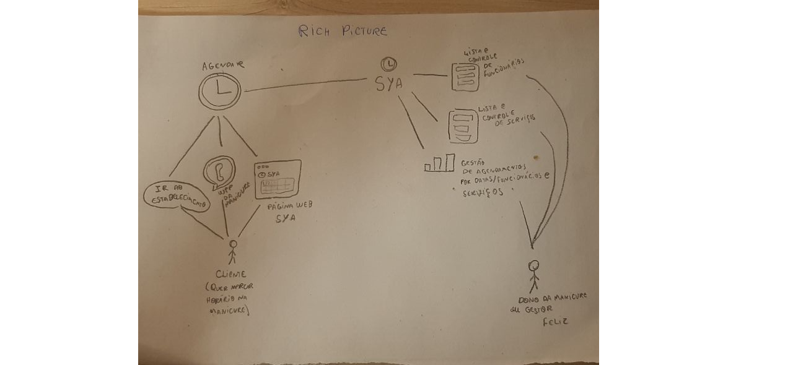

Rich Picture
O Rich Picture é um modelo que explora o máximo de elementos e relações entorno de uma certa situação, desta forma, é possivel constatar aspectos que antes passariam despercebidos pelo time.
Inicialmente cada participante do grupo ficou responsável por fazer o Rich Picture de um aplicativo específico, logo, o primeiro Rich Picture foi realizado por um único integrante do grupo. Após a seleção do aplicativo o time se reuniu para produzir uma nova versão do documento com pontos mais detalhados e com mais informações do aplicativo.
| Data | Versão | Descrição | Autor(es) | 02/09/2020 | 1.0 | Criação do documento sobre Rich Pictures e subindo Rich Picture do Pedro e Do Lucas Leite | Pedro Miranda e Lucas Leite |
|---|
Pedro Miranda

Lucas leite